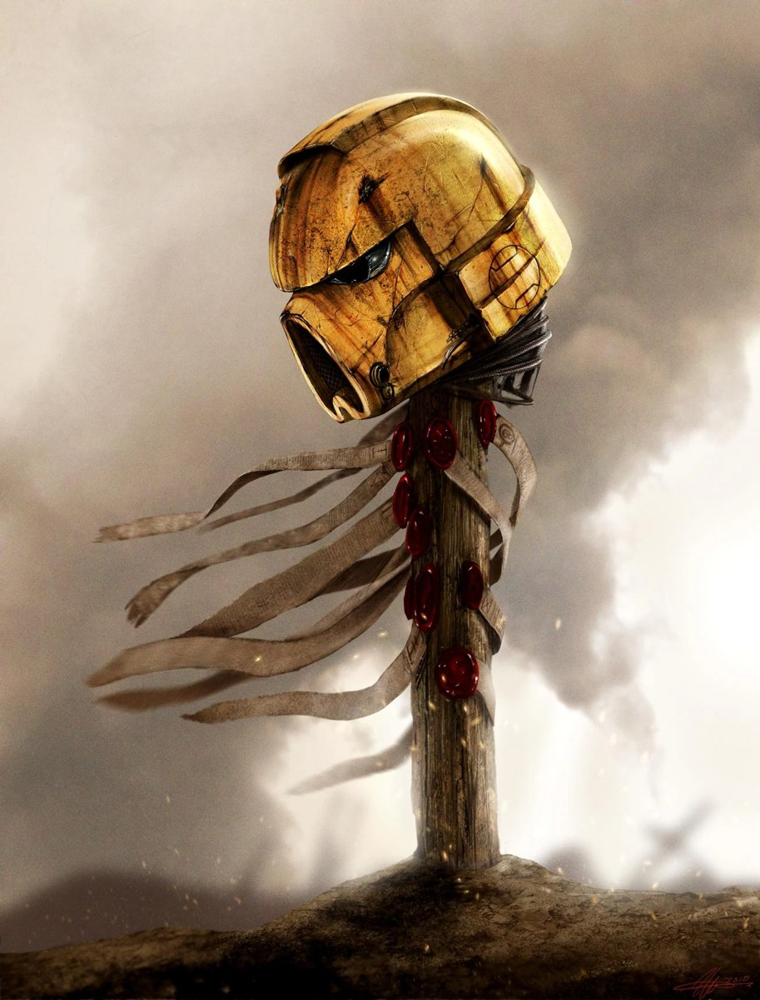

Iron Cage
| Battle of the Iron Cage | |
|---|---|
| Part of the Great Scouring | |
 The Imperial Fists assault the walls of the Eternal Fortress Artwork © Games Workshop | |
| Date | 019.M31 |
| Place | Sebastus IV |
| Result | Inconclusive; both sides claimed victory. The Imperial Fists were nearly destroyed and the Iron Warriors withdrew. |
| Belligerents | |
| Attackers | Defenders |
| Commanders and leaders | |
| Strength | |
| Casualties and losses | |
| Imperial Fists: 10,000–40,000 killed[a] Dorn left with a shattered remnant of the committed companies Orbital fleet scattered Ultramarines: Not recorded | Iron Warriors: Not recorded Perturabo withdrew the Legion and escaped when the Ultramarines arrived |
The Iron Cage is the name given to the battle on the world of Sebastus IV in 019.M31, in the Great Scouring that followed the Horus Heresy. Perturabo, primarch of the Iron Warriors, built a vast fortress there to lure his rival Rogal Dorn into a siege. Dorn took the bait, and the Imperial Fists were bled almost to extinction against its walls until Roboute Guilliman and the Ultramarines arrived and broke the trap. Both Legions claimed the victory. The battle helped persuade Dorn to accept the division of the Legions under the Codex Astartes, and it was among Perturabo's last acts before he ascended as a daemon prince.[1][2]
Background
[edit]The rivalry between Dorn and Perturabo, the Imperium's two great masters of siegecraft, began in the Great Crusade. Perturabo resented the honours given to the Imperial Fists and the task of defending Terra that went to Dorn, while the Iron Warriors were broken up into garrisons across the galaxy. In the Heresy the Iron Warriors joined Horus, and in the Siege of Terra (013–014.M31) Perturabo led the assault on the defences that Dorn had built. When the Heresy ended Perturabo withdrew into the Eye of Terror, and Dorn vowed to bring him back to Terra in an iron cage.[3][2]
The Eternal Fortress
[edit]Perturabo answered the vow. On Sebastus IV he raised a fortress, later called the Eternal Fortress, laid out in the shape of an eight-pointed star and covering some thirty-two square kilometres. It was built to look as if it could be taken, with a central keep that was in truth a decoy, and every approach was a killing ground. He then let it be known that he was there. Dorn, who had sworn his vow before the other primarchs, would not ignore the challenge, though his advisers warned that it was a trap.[1]
The siege
[edit]Dorn opened with orbital bombardment, which did little against the fortress's void shields and bunkers. Perturabo's missile silos answered with atomic weapons that filled the atmosphere with ionisation and cut the Imperial Fists' vox. The Iron Warriors fleet then struck the Imperial Fists ships in orbit with boarding actions and scattered them, leaving the forces on the ground cut off.[1]
On the surface the Imperial Fists assaulted on a front four companies wide. Each wall that fell revealed another behind it, and Perturabo's guns had the range of every breach. As their supplies failed, the Imperial Fists fought on with blades and fists in the trenches and galleries. Dorn's officers later called the siege a "Pain Glove" for the whole Legion, a test of endurance on a scale that their own training rites had only imagined. Thousands of Imperial Fists died.[1][2]

The relief
[edit]Roboute Guilliman, then Lord Commander of the Imperium, learned of the battle and brought a fleet of the Ultramarines to Sebastus IV. Their arrival broke the Iron Warriors' hold on the system. Perturabo, his purpose served, withdrew his Legion and escaped. Dorn was left with the shattered remnant of the companies he had committed.[1]
Aftermath
[edit]Each Legion counted the battle a victory. The Iron Warriors held that they had humbled the Imperial Fists and left at a time of their choosing; the Imperial Fists held that they had driven Perturabo from his fortress. Imperial historians mostly judge it a mutual defeat. The losses at the Iron Cage were among the reasons Dorn, who had resisted the Codex Astartes, at last agreed to divide his Legion into Chapters. Perturabo's withdrawal into the Eye of Terror after the battle was followed by his ascension as a daemon prince of Chaos.[1][2]
For the Imperial Fists and their successors, among them the Black Templars and Crimson Fists, the Iron Cage became a by-word for stubborn courage, and the hatred between them and the Iron Warriors has never cooled.[2]
Timeline
[edit]| Date | Event |
|---|---|
| 014.M31 | End of the Siege of Terra; Perturabo escapes; Dorn's vow |
| 014–021.M31 | The Great Scouring |
| Before 019.M31 | Perturabo raises the Eternal Fortress on Sebastus IV |
| 019.M31 | Siege of the Iron Cage; the Ultramarines relieve the Imperial Fists |
| c. 021.M31 | The Second Founding; the VII Legion is divided under the Codex Astartes |
See also
[edit]Notes
[edit]References
[edit]- ^ a b c d e f McNeill, Graham. Fulgrim (novel). Black Library.
- ^ a b c d e Codex: Space Marines (6th Edition), pg. 42. Games Workshop.
- ^ Abnett, Dan. Shadows of Treachery (Anthology). Black Library, Aaron Dembski-Bowden, John French, Graham McNeill, and Gav Thorpe, "The Lightning Tower" by Dan Abnett.